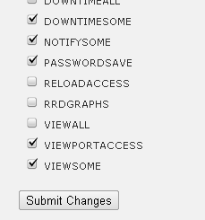

At my previous employer, and recently at my current one, I’ve been responsible for migration to an Opsview based monitoring system. Opsview is an evolution of Nagios which brings a multitude of benefits. I encourage you to check it out.
Since the 3.11.3 release, keywords have been put front and centre of the system’s administration, so I want to present here what I’ve been working on as a strategy for their configuration. Keywords can support three core parts of the Opsview system:
- The Viewport (a traffic-lights status overview)
- User access controls (what services/hosts can be acknowledged, etc)
- Notifications (what you receive emails about)
Most important…
My first bit of advice is do not ever set the keywords when provisioning a new Host or Service Check. This is because on these screens you can’t see the complete context of keywords, and it’s far too easy to create useless duplication. You should instead associate keywords with hosts and services from the Configuration/Keywords screen.
Naming Convention
Okay, let’s go to that screen now, and talk about our naming convention. Yes, there needs to be one, so that you can look at a keyword in another part of Opsview and have a rough idea what it might be associated with. Here’s the template I use, and some examples:
<type>-[<owner>-]<thing> device-ups server-linux service-smtpmsa service-nss-ntpstratum3
Let’s say you have a Linux server running an SMTP message submission service and an NTP Stratum 3 service. I would create one keyword for the underlying operating system (CPU, memory, disk, etc), named “server-linux“. I’d create another for the SMTP service as “service-smtpmsa” and another for the NTP as “service-ntpstratum3“. If your Opsview is shared between a number of teams, it might also be useful to insert the managing team for that service in the name, as I’ve done with NSS, above. The type “device” tends to be reserved for appliances which fulfil one function, so you don’t need to separate out their server/service nature.

With this in place, if the UNIX Systems team manages the server and OS, and another team manages the applications stack on the box, we’ve got keywords for each, allowing easy and fine grained visibility controls. When creating the keywords, you should go into the Objects tab and associate it with the appropriate hosts and service checks. I find this much more straightforward than using the Keywords field on the actual host and service check configuration pages.
Viewport
Let’s look at each of the three cornerstone uses I mentioned above, in turn. First is the Viewport. Well, that’s easy enough to enable for a keyword by toggling the radio button and assigning a sensible description (such as ”Email Message Submission Service” for “service-smtpmsa“). Which users can see which items in their own viewport is configured in the role (Advanced/Roles) associated to that user. I’d clone off one new role per user, and go to the Objects tab, remove all Host Groups or Service Groups and select only some Keywords. Job done – the user now sees those items in their viewport.

Actions
Next up is the ability for a user to acknowledge, or mark as down, an item. In fact it’s done in the same way as the viewport, that is, through a role. That’s because roles contain, on the Access tab, the VIEWPORTACCESS item for viewports and the ACTIONSOME/NOTIFYSOME items for actioning alerts. Because it’s currently only possible for a user to have one role, you cannot easily separate these rights for different keywords – a real pity. But I have no doubt multiple roles will come along, just like multiple notification profiles.
Notifications
Which brings us to the final item. Again I’d create a new notification profile for each user, so that it’s possible to opt them in or out of any service notifications. Using keywords makes things simple – are you just managing the underlying OS? Then you can have notifications about that, and not the application stack. It doesn’t stop you seeing the app stack status in your viewport, though. Because the notification profile is associated with a user, you’ll only be offered keywords that have been authorized in their role, which is a nice touch.
And finally…
In each of these steps the naming convention has really helped, because when looking at keywords the meaning “these hosts” or “this service” will (hopefully) jump out. If I were scaling this up, I’d have it all provisioned via the Opsview API from a configuration management or inventory database, and updated nightly. This is another way naming conventions help – they are friendly to automation.